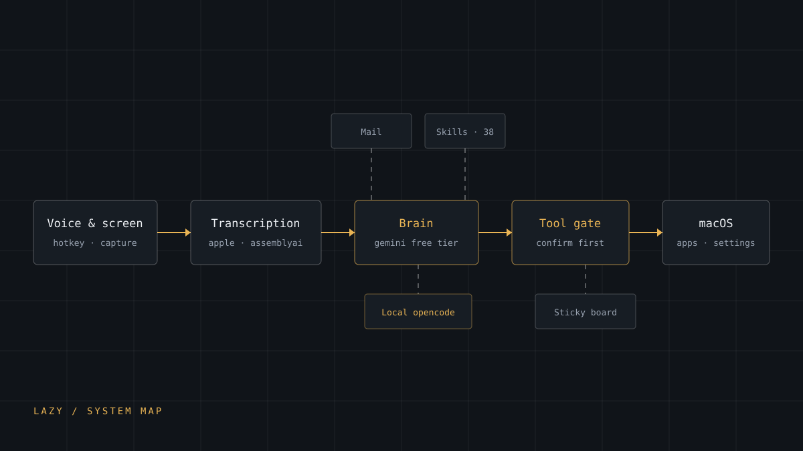

Software · AI
Lazy
A free, open-source AI companion for macOS that lives in your menu bar: hold a hotkey to talk, let it see your screen, and have it drive apps, triage mail and keep a sticky board under your windows.

- Role
- Design and implementation (solo)
- Platform
- macOS 14.2+ (Intel & Apple Silicon)
- Language
- Swift · SwiftUI
- Status
- Open source
- Licence
- MIT
- Permissions
- Microphone · Screen Recording · Accessibility · Speech Recognition
Problem
An assistant that is genuinely useful on a desktop has to do four hard things at once: listen without becoming a Dock app, understand what is on screen, act on the system, and avoid doing anything destructive while it works. Each is a solved problem on its own. The difficulty is holding all four in one process that still answers quickly enough to feel like a conversation.
Commercial macOS companions already do this, on a subscription. The question I set myself was whether the same shape of product could be assembled entirely from free tiers and local services, with no paid API and no telemetry account behind it.
Why it mattered
Every layer has a paid default. Speech recognition, the model behind the replies, the voice that speaks them, and mail understanding all want a credit card. Building on free tiers means each of those can be unavailable, rate-limited or slower than expected, which changes how the code is structured rather than merely which keys are configured.
It also keeps the running cost honest: the whole app costs nothing to use, and there is no subscription hiding behind it.
My role
Sole designer and implementer across the whole application:
- Architecture: the layering between input, transcription, brain transports, tool execution and spoken output
- The SwiftUI surfaces: menu-bar panel, notch chat sheet, home window, sticky board and the walkthrough overlays
- The Accessibility layer that indexes on-screen elements and drives them
- Mail integration end to end: OAuth, classification, notification and draft-before-send
- The skills catalogue and the prompt layer that injects skills on demand
Technical approach
- Hotkey input. A global shortcut monitor for push-to-talk on
ctrl+optionand dictation onfn+control, so the app never needs keyboard focus to start listening. - Transcription behind a protocol. Apple's on-device speech, AssemblyAI streaming and OpenAI's API are interchangeable providers rather than a hard dependency.
- Brain transports behind a protocol. Gemini's free tier is the default, with Ollama, OpenAI, Claude and a local opencode server as alternatives, so no single vendor is load-bearing.
- Spoken output with a fallback. ElevenLabs while its free quota lasts, then the macOS system voice without a code change at the call site.
- Confirmation before side effects. A tool gate and a risk gate in the execution path, so anything that sends, deletes or purchases asks first.
- Accessibility control. Element indexing and location detection to read and drive arbitrary interfaces, which is what turns a chat window into something that can open System Settings.
- Skills on demand. 38 bundled skills plus personal ones, injected into context when relevant instead of sitting resident in every prompt.
Implementation
The decision that shaped the build was making every external capability substitutable. Speech, brain and voice each sit behind a protocol with more than one implementation, so a quota running out or an API changing becomes a configuration change instead of a rewrite.
- One provider protocol per capability, so an exhausted free tier degrades rather than breaks
- Confirmation gates placed in the tool path itself, not in the view, so every route to a side effect passes through them
- Accessibility indexing written to tolerate missing elements, because interfaces get renamed between releases
- Permissions requested at first run with a reason attached, since macOS silently denies anything asked for too late
- Main-thread stall reporting built in, because a voice loop that blocks feels broken even when the answer is correct
Impact
What exists today is a working application: hold the hotkey, speak, and the reply is spoken back; ask it to create a folder or open a settings pane and it does so once you confirm. Mail is classified, urgent items raise a banner, and replies are drafted for approval rather than sent on their own.
The transferable result was not any single feature. It was the layering: once speech, brain and voice are protocols rather than integrations, adding a fourth transport is a small amount of code, which is the difference between a demo and something maintainable.
Challenges
- Permissions. macOS gates microphone, screen recording, accessibility and speech recognition separately, and each one is a trip to System Settings. Asking at the right moment, and recovering cleanly when a permission is refused, took as much care as the features behind them.
- Fragile UI automation. Driving other applications through Accessibility means depending on interfaces I do not own. Indexing and location detection have to be written expecting elements to be absent or renamed.
- Free-tier ceilings. Every layer has a quota, and they expire on different schedules. Voice, transcription and model access each degrade differently, so the fallbacks are per layer rather than one global switch.
- Latency. A conversation only feels natural if the round trip stays short, which pushes work off the main thread and argues against doing everything at once.
- Safety. An agent that can drive the system is an agent that can delete things. The gates are deliberately insistent: confirming is cheaper than undoing.
What I learned
Substitutability is the actual feature. The interesting part of this build is not any single capability; it is that speech, brain, voice and mail can each be swapped without touching the rest of the system.
The second lesson is that safety belongs in the path, not the interface. A confirmation prompt in a view can be routed around by the next feature that calls the same action. A gate in the tool path cannot.